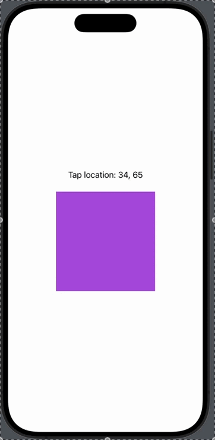
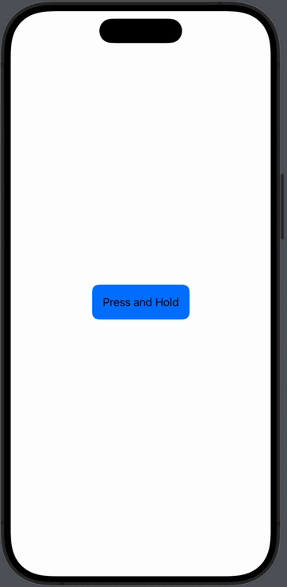
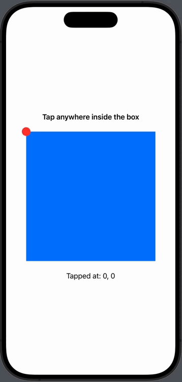
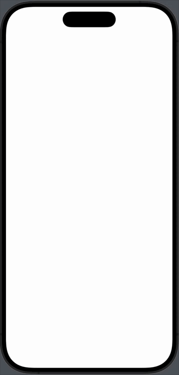
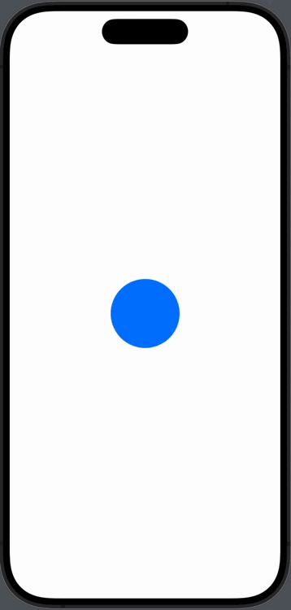
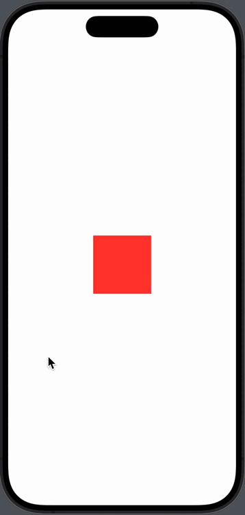
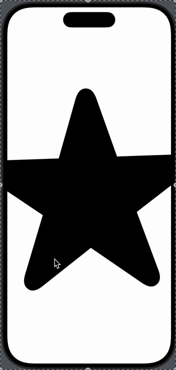
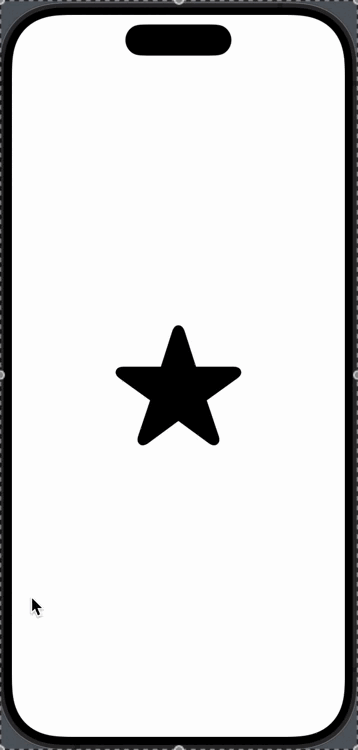

4. Тур по жестам в SwiftUI
Изучение данного блока предполагает предварительное знание синтаксиса языка Swift. Для успешного освоения этого материала, необходимо иметь базовое понимание синтаксиса языка Swift. Это включает в себя знание основных структур данных, операторов, циклов, функций, абстракций и других ключевых элементов языка. Без этих фундаментальных знаний будет сложно понять более сложные концепции и примеры, которые будут рассматриваться в данном блоке.
Жесты — механизм, позволяющий разработчикам реагировать на пользовательские взаимодействия с интерфейсом. Жесты включают такие действия, как нажатия, долгие нажатия, перетаскивания, масштабирование, вращение и многое другое. SwiftUI предоставляет ряд встроенных жестов, которые можно использовать для создания интуитивно понятных интерфейсов, а также возможность создания собственных жестов.
Как работают жесты в SwiftUI¶
SwiftUI обрабатывает события касания и другие сенсорные данные, чтобы обнаруживать и обрабатывать жесты. Эти данные включают позицию пальцев, длительность касания, угол вращения и другие параметры, которые затем преобразуются в действия, определенные разработчиком. Под капотом SwiftUI использует сочетание UIView (для iOS) или NSView (для macOS) и различных API для работы с событиями ввода. Жесты являются оберткой над этими API и предоставляют более удобный способ работы с пользователем.
Типы жестов и их примеры¶
TapGesture¶
Это базовый жест, который распознает одно или несколько нажатий на экран. Он полезен для выполнения простых действий, таких как открытие окна, изменение состояния кнопки или переключение между режимами.
Реализация:
TapGesture обрабатывает событие касания (touch event) и проверяет, соответствует ли оно заданному количеству нажатий. Если количество нажатий совпадает, жест срабатывает.
Примеры:
-
Простое нажатие
struct SimpleTapGestureExample: View { @State private var isTapped = false var body: some View { Text(isTapped ? "Tapped!" : "Tap me") .padding() .background(isTapped ? Color.green : Color.blue) .cornerRadius(10) .onTapGesture { isTapped.toggle() } } }
-
Распознавание нескольких нажатий
Чтобы поменялось значение tapCount, пользователю необходимо произвести двойной тап на кнопку
struct MultipleTapGestureExample: View {
@State private var tapCount = 0
var body: some View {
VStack {
Text("Double-tap to count")
Text("Tapped \(tapCount) times")
.padding()
.background(Color.orange)
.cornerRadius(10)
.onTapGesture(count: 2) {
tapCount += 1
}
}
}
}
- Распознавание нажатия с координатами

struct CoordinateTapGestureExample: View { @State private var location = CGPoint.zero var body: some View { VStack { Text("Tap location: \(Int(location.x)), \(Int(location.y))") .padding() Rectangle() .fill(Color.purple) .frame(width: 200, height: 200) .onTapGesture { loc in location = loc } } } }
LongPressGesture¶
Распознает долгие нажатия на экран. Этот жест полезен для выполнения действий, которые требуют более уверенного ввода, таких как вызов контекстного меню, переключение состояния или подтверждение действия.
Реализация:
LongPressGesture использует таймер для отслеживания продолжительности касания. Если касание длится дольше указанного времени и расстояние не превышает установленный порог, жест считается успешным.
Проблемы:
Жесты длительного нажатия могут конфликтовать с обычными касаниями или перетаскиванием. Для решения определяйте четкие границы для каждого типа жеста, используя highPriorityGesture.
Примеры:
-
Простое долгое нажатие
struct SimpleLongPressGestureExample: View { @State private var isPressed = false var body: some View { Text(isPressed ? "Long Pressed!" : "Press and Hold") .padding() .background(isPressed ? Color.red : Color.blue) .cornerRadius(10) .onLongPressGesture { isPressed.toggle() } } } -
Долгое нажатие с изменением состояния
struct StatefulLongPressGestureExample: View { @State private var isPressed = false var body: some View { Text(isPressed ? "Holding..." : "Press and Hold") .padding() .background(isPressed ? Color.green : Color.blue) .cornerRadius(10) .onLongPressGesture( minimumDuration: 1.0, perform: { isPressed = false }, onPressingChanged: { pressing in isPressed = pressing } ) } }
SpatialTapGesture¶
Предоставляет вам доступ к точным координатам нажатия относительно координатной системы представления, на котором был вызван жест. Это позволяет создавать сложные взаимодействия, где важно знать место нажатия. SwiftUI также заботится о том, чтобы корректно преобразовать координаты в зависимости от трансформаций, наложенных на представление, например, масштабирование или вращение.
-
Взаимодействие с объектом
struct SpatialTapGestureExample: View { @State private var tappedLocation: CGPoint = .zero var body: some View { VStack { Text("Tap anywhere inside the box") .font(.headline) .padding() Rectangle() .fill(Color.blue) .frame(width: 300, height: 300) .gesture( SpatialTapGesture() .onEnded { value in self.tappedLocation = value.location } ) .overlay( Circle() .fill(Color.red) .frame(width: 20, height: 20) .position(tappedLocation) ) Text("Tapped at: \(Int(tappedLocation.x)), \(Int(tappedLocation.y))") .padding() } } } -
Взаимодействие с множеством объектов
struct SpatialTapGestureTappedZoneExample: View { @State private var labels: [CGPoint] = [] var body: some View { ZStack { Color.white .gesture( SpatialTapGesture() .onEnded { value in self.labels.append(value.location) } ) ForEach(0..<labels.count, id: \.self) { index in Text("Label \(index + 1)") .padding(8) .background(Color.yellow) .cornerRadius(5) .position(self.labels[index]) } } .edgesIgnoringSafeArea(.all) } }
DragGesture¶
Позволяет отслеживать перемещение пальца по экрану и изменять расположение элементов. Этот жест часто используется для создания интерактивных элементов, таких как перетаскивание объектов, слайдеры или анимации.
Реализация:
DragGesture обрабатывает события перемещения касания и преобразует их в смещения (offsets), которые затем могут быть применены к интерфейсным элементам. Под капотом он отслеживает начальную и текущую позиции касания и вычисляет изменение (translation).
Примеры:
-
Простое перетаскивание
struct SimpleDragGestureExample: View { @State private var position = CGSize.zero var body: some View { Circle() .fill(Color.blue) .frame(width: 100, height: 100) .offset(position) .gesture( DragGesture() .onChanged { value in position = value.translation } .onEnded { _ in position = .zero } ) } } -
Перетаскивание с ограничением области
struct ConstrainedDragGestureExample: View { @State private var position = CGSize.zero var body: some View { Rectangle() .fill(Color.red) .frame(width: 100, height: 100) .offset(position) .gesture( DragGesture() .onChanged { value in let newTranslation = CGSize( width: min(max(value.translation.width, -100), 100), height: min(max(value.translation.height, -100), 100) ) position = newTranslation } .onEnded { _ in position = .zero } ) } }
MagnifyGesture¶
Позволяет пользователю увеличивать или уменьшать элементы с помощью жеста “щипка”. Полезен в приложениях, где требуется изменение масштаба изображений, карт или других визуальных элементов.
Реализация:
MagnifyGesture** обрабатывает изменение расстояния между двумя пальцами пользователя и преобразует это изменение в коэффициент масштаба. Под капотом он использует события многопальцевых касаний и вычисляет изменение расстояния между касаниями.
Пример:
struct MagnifyGestureExample: View {
@State private var currentScale: CGFloat = 1.0
var body: some View {
Image(systemName: "star.fill")
.resizable()
.aspectRatio(contentMode: .fit)
.scaleEffect(currentScale)
.gesture(
MagnifyGesture()
.onChanged { value in
currentScale = value.magnification
}
)
}
}
RotateGesture¶
Позволяет вращать элементы на экране с использованием двух пальцев. Полезен в приложениях для работы с изображениями, графикой или 3D-моделями.
Реализация:
RotateGesture** обрабатывает изменение угла между двумя пальцами пользователя и преобразует это изменение в угол поворота элемента.
Пример:
struct RotateGestureExample: View {
@State private var angle: Angle = .zero
var body: some View {
Image(systemName: "arrow.right.circle.fill")
.resizable()
.aspectRatio(contentMode: .fit)
.rotationEffect(angle)
.gesture(
RotateGesture()
.onChanged { value in
angle = value.rotation
}
)
}
}
Apple Pencil Жесты¶
SwiftUI предоставляет специальные жесты для работы с Apple Pencil, такие как onPencilDoubleTap и onPencilSqueeze. Они полезны в приложениях для рисования, аннотирования или управления интерфейсом с помощью Apple Pencil.
Реализация:
Эти жесты используют сенсоры Apple Pencil для определения двойных касаний и сжатий, которые затем можно использовать для выполнения специфических действий. Под капотом они взаимодействуют с API Apple Pencil для обработки данных от устройства.
Примеры:
- Двойное нажатие Apple Pencil
struct PencilDoubleTapExample: View { @State private var isActivated = false var body: some View { Text(isActivated ? "Double Tap Activated!" : "Double Tap with Pencil") .padding() .background(isActivated ? Color.orange : Color.gray) .cornerRadius(10) .onPencilDoubleTap { _ in isActivated.toggle() } } } - Сжатие Apple Pencil
struct PencilSqueezeExample: View { @State private var squeezePhase: PencilSqueezeGesturePhase? var body: some View { VStack { Text("Pencil Squeeze Phase: \(squeezePhase.debugDescription)") .padding() .background(Color.yellow) .cornerRadius(10) } .onPencilSqueeze { phase in squeezePhase = phase } } }
Комбинированные жесты¶
SwiftUI позволяет комбинировать жесты для создания сложных взаимодействий с помощью SimultaneousGesture, SequenceGesture и ExclusiveGesture. Это полезно для создания сложных и интуитивно понятных интерфейсов.
Реализация:
Комбинированные жесты позволяют объединять несколько жестов в один, который будет обрабатываться как единое целое. SimultaneousGesture позволяет обрабатывать жесты одновременно, SequenceGesture задает последовательность жестов, а ExclusiveGesture обеспечивает выполнение только одного из двух жестов. Под капотом они управляют очередями событий касания и распределяют их между соответствующими жестами.
Примеры:
-
SimultaneousGesture
struct SimultaneousGestureExample: View { @State private var scale: CGFloat = 1.0 @State private var angle: Angle = .zero var body: some View { let magnifyGesture = MagnifyGesture() .onChanged { value in scale = value.magnification } let rotateGesture = RotateGesture() .onChanged { value in angle = value.rotation } return Image(systemName: "star.fill") .resizable() .aspectRatio(contentMode: .fit) .scaleEffect(scale) .rotationEffect(angle) .gesture(SimultaneousGesture(magnifyGesture, rotateGesture)) } } -
SequenceGesture
Сначала пользователь должен сделать жест долгого нажатия на квадрат. После этого пользователь может перетаскивать квадрат по экрану.
struct SequenceGestureExample: View {
@State private var hasLongPressed = false
@State private var offset: CGSize = .zero
@State private var color: Color = .blue
@State private var rotation: Angle = .zero
var body: some View {
let longPressDragRotate = LongPressGesture(minimumDuration: 1.0)
.onEnded { _ in
self.hasLongPressed = true
self.color = .green
}
.sequenced(before: DragGesture())
.onChanged { value in
switch value {
case .second(true, let drag):
self.offset = drag?.translation ?? .zero
if let drag = drag {
self.rotation = Angle(degrees: Double(drag.translation.width / 10))
}
default:
break
}
}
.onEnded { value in
switch value {
case .second(true, _):
self.offset = .zero
self.color = .blue
self.rotation = .zero
default:
break
}
self.hasLongPressed = false
}
return Rectangle()
.fill(self.color)
.frame(width: 100, height: 100)
.offset(x: offset.width, y: offset.height)
.rotationEffect(rotation)
.animation(.spring(), value: offset)
.gesture(longPressDragRotate)
}
}
- ExclusiveGesture

struct ExclusiveGestureExampleView: View { @State private var offset = CGSize.zero @State private var scale: CGFloat = 1.0 var body: some View { let dragGesture = DragGesture() .onChanged { value in self.offset = value.translation } .onEnded { _ in withAnimation { self.offset = .zero } } let magnificationGesture = MagnificationGesture() .onChanged { value in self.scale = value } .onEnded { _ in withAnimation { self.scale = 1.0 } } let combinedGesture = ExclusiveGesture(dragGesture, magnificationGesture) Image(systemName: "star.fill") .resizable() .scaledToFit() .frame(width: 150, height: 150) .offset(offset) .scaleEffect(scale) .gesture(combinedGesture) .animation(.spring(), value: offset) // Добавляем анимацию .animation(.spring(), value: scale) } }
Управление приоритетами жестов¶
highPriorityGesture — это модификатор в SwiftUI, который позволяет вам задать приоритет для жестов на уровне интерфейса пользователя. В контексте SwiftUI, несколько жестов могут взаимодействовать друг с другом, и highPriorityGesture позволяет вам указать, что определённый жест должен обрабатываться с более высоким приоритетом, чем другие жесты, определённые на том же элементе.
Пример:
struct GesturePriorityExample: View {
@State private var action: String = "None"
var body: some View {
let tapGesture = TapGesture()
.onEnded {
action = "Tapped"
}
let longPressGesture = LongPressGesture(minimumDuration: 1.0)
.onEnded { _ in
action = "Long Pressed"
}
return Text("Action: \(action)")
.padding()
.background(Color.cyan)
.cornerRadius(10)
.gesture(longPressGesture)
.highPriorityGesture(tapGesture) // TapGesture имеет приоритет
}
}
Отключение жестов и управление доступностью¶
Модификатор allowsHitTesting управляет тем, можно ли взаимодействовать с элементом интерфейса. Если установить его значение в false, то элемент будет невидим для системы касаний, что позволяет создавать интерфейсы, где элементы могут быть видимы, но не реагировать на касания.
Пример:
struct AllowsHitTestingExample: View {
@State private var isDisabled = true
var body: some View {
VStack {
Text(isDisabled ? "Ohhhh no" : "Tap me")
.padding()
.background(Color.blue)
.cornerRadius(10)
.onTapGesture {
isDisabled.toggle() // Этот код не выполнится, если allowsHitTesting(false)
}
.allowsHitTesting(!isDisabled)
Button("Toggle Hit Testing") {
isDisabled.toggle()
}
}
}
}